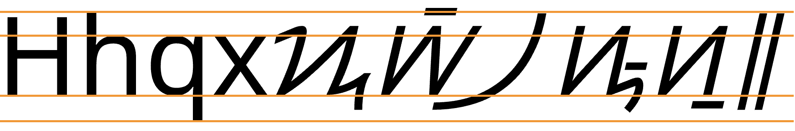

This page brings together basic information about the Hanunó’o script and its use for the Hanunó’o language. It aims to provide a brief, descriptive summary of the modern, printed orthography and typographic features, and to advise how to write Hanunó’o using Unicode.
Note: Given the difficulty in finding term lists in written in the Hanunó’o orthography, the Hanunó’o script examples cited here were derived by manually applying the rules of the orthography to Latin transcriptions. Hanunó’o is a simple enough script that these should be reliable.
Sample
Select part of this sample text to show a list of characters, with links to more details.
Change size:
36px
The Hanunó’o language is spoken by around 25,000e Mangyans in the island of Mindoro, Philippines.
The Hanunó’o script is currently endangered, and authorities in the area where it is spoken are trying to encourage its use by the younger generation. One particularly common former use was for writing ambahan, traditional poetry.
ᜱᜨᜳᜨᜳᜢ
When the Spaniards arrived in the Philippines in the 1500s they were surprised to find that the inhabitants were largely literate in scripts of which Hanunó’o is one survivor. The scripts have the characteristics of Brahmi-derived scripts, but the pathway that led to this orthography is not clear. It is thought that it may lead via Java and have arrived in the Philippines between the 10th and 14th centuries.me
The Hanunó’o script is an abugida. Consonants carry an inherent vowel which can be modified by appending vowel signs to the consonant. See the table to the right for a brief overview of features for the modern Hanunó’o orthography.
Hanunó’o text runs left-to-left in horizontal lines, and is unicameral.
Hanunó’o has 15 consonant letters. Onsets are a simple consonant, no clusters. Syllable codas are written in modern texts, followed by 1734, which was added to the orthography in the 1950s. ❯ consonants
The Hanunó’o orthography is an abugida with one inherent vowel, generally pronounced a. Other vowels are written using one of only 2 vowel signs (for 4 sounds). ❯ vowels
Hanunó’o has 3 independent vowels, used for vowels that are preceded by a glottal stop. These may occur word-initially or word-medially. ❯ standalone
Character index
Letters
Show
Consonants
ᜣ␣ᜤ␣ᜥ␣ᜦ␣ᜧ␣ᜨ␣ᜩ␣ᜪ␣ᜫ␣ᜬ␣ᜭ␣ᜮ␣ᜯ␣ᜰ␣ᜱ
Vowels
ᜠ␣ᜡ␣ᜢ
Combining marks
Show
Vowels
ᜲ␣ᜳ␣᜴
Punctuation
Show᜵␣᜶
Items to show in lists
Phonology
The following represents the repertoire of the Hanunó’o language.
Click on the sounds to reveal locations in this document where they are mentioned.
Phones in a lighter colour are non-native or allophones. Source Barham.
Vowel sounds
Plain vowels
Consonant sounds
labial
dental
alveolar
palatal
velar
glottal
stop
pb
td
kɡ
ʔ
fricative
f
s
h
nasal
m
n
ŋ
approximant
w
l
j
trill/flap
r
Tone
Hanunó’o is not a tonal language.
Structure
Hanunoo syllable types include:
CV | CVC
Vowels
The following features are not found in the Hanunó’o orthography.
a following a consonant is not written, but is seen as an inherent part of the consonant letter, so ka is written by simply using the consonant letter.
Combining marks used for vowels
ᜣᜲ
kiU+1723 LETTER KA + U+1732 VOWEL SIGN I
Hanunó’o uses only two combining marks for vowels when it is necessary to override the inherent vowel.
ᜲ␣ᜳ
Each vowel sign represents one of 2 sounds. 1732 represents either the sound i or the sound e; 1733 represents either o or u.
In principle, the glyphs look the same, and the distinction is made by position: i ~ e goes above the base, and o ~ u goes below. However, in practise, although the relative height distinction is always preserved, the way the vowel sign connects with the base varies from consonant to consonant. The differences are significant enough to make it worthwhile to show all possible combinations in the table below.
Consonant
No vowel sign
With i/e
With o/u
p
ᜩ
ᜩᜲ
ᜩᜳ
b
ᜪ
ᜪᜲ
ᜪᜳ
t
ᜦ
ᜦᜲ
ᜦᜳ
d
ᜧ
ᜧᜲ
ᜧᜳ
k
ᜣ
ᜣᜲ
ᜣᜳ
ɡ
ᜤ
ᜤᜲ
ᜤᜳ
s
ᜰ
ᜰᜲ
ᜰᜳ
h
ᜱ
ᜱᜲ
ᜱᜳ
m
ᜫ
ᜫᜲ
ᜫᜳ
n
ᜨ
ᜨᜲ
ᜨᜳ
ŋ
ᜥ
ᜥᜲ
ᜥᜳ
w
ᜯ
ᜯᜲ
ᜯᜳ
r
ᜭ
ᜭᜲ
ᜭᜳ
l
ᜮ
ᜮᜲ
ᜮᜳ
j
ᜬ
ᜬᜲ
ᜬᜳ
Placement of vowel signs with Hanunó’o consonants.
Standalone vowels
ᜠ
aU+1720 LETTER A
ᜠ␣ᜡ␣ᜢ
Vowels at the beginning of a word or following another vowel are actually transcribed in IPA with a preceding glottal stop (ʔ), but they are written using one of 3 independent vowel letters.
As with the vowel signs, these letters each represent one of two possible sounds. (See the box above.)
ᜠᜥ᜴ᜪᜳ
ᜡᜮᜳᜥ
ᜢᜩᜦ᜴
Consonants without vowels
᜴
In the 1950s a Dutch anthropologist introduced 1734 as a way to indicate consonants without a following vowel. This was taken up by the users of this orthography, and is now in general use.
It is used to indicate syllable codas both at the end of a word and within a word.
ᜪᜳᜱᜳᜣ᜴
ᜮᜤ᜴ᜨᜰ᜴
Vowel sounds to characters
This section maps Hanunó’o vowel sounds to common graphemes in the Hanunó’o orthography.
The left column shows dependent vowels; the right column shows independent vowel letters.
Sounds listed as 'infrequent' are allophones, or sounds used for foreign words, etc.
Plain vowels
i
1732
ᜣᜲᜦ
1721
ᜣᜳᜥ
u
1733
ᜡᜧᜳ
1722
ᜢᜭᜥ᜴
e
1732
ᜮᜲᜢᜤ᜴
1721
o
1733
ᜨᜫᜳᜣ᜴
1722
ᜩᜳᜤ᜴ᜢᜨ᜴
a
Inherent vowel
ᜠᜪᜪ
1720
ᜠᜥ᜴ᜪᜳ
Consonants
The following features are not found in the Hanunó’o orthography.
There are no repertoire extensions to cover loan words, etc.
There is no mechanism to indicate gemination or consonant lengthening.
There are no conjuncts.
Basic consonants
Hanunó’o consonants are few and simple. There is no repertoire extension mechanism.
ᜩ␣ᜪ␣ᜦ␣ᜧ␣ᜣ␣ᜤᜰ␣ᜱᜫ␣ᜨ␣ᜥᜯ␣ᜭ␣ᜮ␣ᜬ
Onsets
Hanunó’o syllable onsets are straightforward. They don't involve consonant clusters.
Finals
Like some other neighouring scripts, the syllable codas were not written in the Hanunó’o orthography until the 1950s (which, of course, can lead to a certain amount of ambiguity). Dutch anthropologist Antoon Postma introduced the pamudpod sign ( 1734 ) to indicate a syllable final consonantwl.
ᜢᜮᜬ᜴
ᜣᜨ᜴ᜠᜣᜨ᜴
Consonant clusters
The modern Hanunó’o orthography is able to mark word-medial consonant clusters using 1734. There are no conjuncts or special interactions between glyphs in such cases.
ᜫᜤ᜴ᜧᜣ
ᜰᜲᜨ᜴ᜦᜬ᜴
Consonant sounds to characters
This section maps Hanunó’o consonant sounds to common graphemes in the Hanunó’o orthography.
Syllable-final consonants are never written. The right-hand column shows the shape alone, combined with vowel sign I, and combined with vowel sign U, respectively.
Click on a grapheme to find other mentions on this page (links appear at the bottom of the page). Click on the character name to see examples and for detailed descriptions of the character(s) shown.
Sounds listed as 'infrequent' are allophones, or sounds used for foreign words, etc.
Stops
p
1729
ᜩᜣ᜴ᜩᜣ᜴
ᜩ ᜩᜲ ᜩᜳ
b
172A
ᜪᜪᜬᜲ
ᜪ ᜪᜲ ᜪᜳ
t
1726
ᜦᜨᜨ᜴
ᜦ ᜦᜲ ᜦᜳ
d
1727
ᜧᜣ
ᜧ ᜧᜲ ᜧᜳ
k
1723
ᜣᜮᜲ
ᜣ ᜣᜲ ᜣᜳ
ɡ
1724
ᜤᜫᜳᜦ᜴
ᜤ ᜤᜲ ᜤᜳ
Fricatives
s
1730
ᜰᜳᜰᜳ
ᜰ ᜰᜲ ᜰᜳ
h
1731
ᜱᜥᜳᜥᜳᜢ
ᜱ ᜱᜲ ᜱᜳ
Nasals
m
172B
ᜫᜤᜰ
ᜫ ᜫᜲ ᜫᜳ
n
1728
ᜨᜫᜳᜣ᜴
ᜨ ᜨᜲ ᜨᜳ
ŋ
1725
ᜥᜭᜨ᜴
ᜥ ᜥᜲ ᜥᜳ
Other sonorants
w
172F
ᜯᜮ
ᜯ ᜯᜲ ᜯᜳ
r
172D
ᜫᜭᜭ
ᜭ ᜭᜲ ᜭᜳ
l
172E
ᜮᜣᜯ᜴
ᜮ ᜮᜲ ᜮᜳ
j
172C
ᜬᜪᜲ
ᜬ ᜬᜲ ᜬᜳ
Numbers
The Hanunó’o Unicode block doesn't have a set of native digits.
Text direction
Hanunó’o text runs left to right in horizontal lines.
Eversonme reports that the writing often runs bottom to top on lines that progress from left to right. However, the letter glyphs are rotated in this case, so this is simply a rotation of the medium, rather than a different writing direction. It makes it easier to fit the writing on bamboo strips.
The following features are not found in the Hanunó’o orthography.
Hanunó’o text is not cursive (ie. joined up like Arabic).
Letters do not interact, so no context-based shaping is required.
No base letter has more than one combining mark attached to it.
The orthography has no case distinction, and no special transforms are needed to convert between characters.
This section brings together information about the following topics:
writing styles;
cursive text;
context-based shaping;
context-based positioning;
baselines, line height, etc.;
font styles;
case & other character transforms.
The majority of the Hanunó’o 18 letters are variants of a small number of basic shapes, as shown in fig_basic_shapes.
ᜱ␣ᜧ␣ᜯ␣ᜠ␣ᜡᜤ␣ᜬ␣ᜰ␣ᜮᜥ␣ᜩ␣ᜫᜨ␣ᜣ␣ᜪHanunó’o letters arranged to show similarities in shape.
Context-based shaping & positioning
Hanunó’o letters don't interact with each other, but the placement of the vowel signs requires context-sensitive placement, and in some cases reshaping of the letter. The various combinations are shown in dependent_vowel_table.
Hanunó’o has no multiple combining marks, or other shaping to consider.
Letterform slopes, weights, & italics
tbd
Since it is hard to find any printed examples of Hanunó’o text, it is likely that there is no standard approach to the use of oblique and bold forms, if they are used at all. The Noto Hanunoo font has only a regular face.
Graphemes
Hanunó’o is a simple orthography and typographic units can be easily segmented using grapheme clusters.
Phrase, sentence, and section delimiters are described in phrase.
Grapheme clusters
Base Combining_mark*
Hanunó’o typographic units consist of a letter or a letter with a single combining mark (one of two vowel signs). Both of these units fit the definition of a grapheme cluster.
As previously noted, syllable codas are not written in Hanunó’o text, and so the segmentation only captures onsets and the syllable nucleus.
Punctuation & inline features
Word boundaries
Words are separated by spaces.
Phrase & section boundaries
᜵␣᜶
Hanunó’o uses ᜵ for a short pause, and ᜶ for a longer or sentence-like pause. It may also be used at the end of a poem.
phrase
᜵
sentence
᜶
Bracketed text
tbd
Quotations & citations
tbd
Emphasis
tbd
Abbreviation, ellipsis & repetition
tbd
Inline notes & annotations
tbd
Other punctuation
tbd
Other inline text decoration
tbd
Line & paragraph layout
Line breaking & hyphenation
tbd
In-word line-breaking
tbd
Line-edge rules
As in almost all writing systems, certain punctuation characters should not appear at the end or the start of a line. The Unicode line-break properties help applications decide whether a character should appear at the start or end of a line.
Hanunó’o uses the so-called 'alphabetic' baseline, which is the same as for Latin and many other scripts.
Hanunó’o letters vary slightly in height but are mostly around the same, with no ascenders and only tiny descenders. Vowel signs may appear above or below some letters, but these are horizontal dashes. Vowel signs for u~o tend to be attached to most letters above the base line.
To give an approximate idea, fig_baselines compares Latin and Hanunó’o glyphs from the Noto Sans font. The basic height of Hanunó’o letters is typically very slightly above the Latin x-height, however some punctuation marks and combining marks can reach just beyond the Latin ascenders (but not the descenders), creating a need for very slightly larger line spacing.

Font metrics for Latin text compared with Hanunó’o glyphs in the Noto Sans Hanunó’o font.
Counters, lists, etc.
tbd
Styling initials
tbd
Page & book layout
This section is for any features that are specific to Hanunó’o and that relate to the following topics:
general page layout & progression;
grids & tables;
notes, footnotes, etc;
forms & user interaction;
page numbering, running headers, etc.